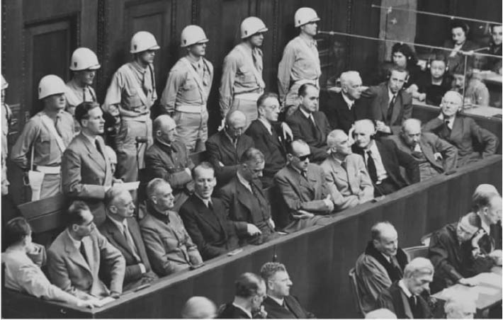

“它就是不对的。”“它不符合人的本性。”你听到过几次针对某种实践或行为的诸如此类的看法？这些看法的意思是什么？当人们责备堕胎行为不道德或者声称无法容忍同性婚姻时，其根据何在？关于对错善恶，是否存在一个客观的可确证的标准？如果答案是肯定的，我们又如何能找到这种标准？
道德难题充斥着我们的生活并成为政治、法律争论的题材。而且，自联合国成立以来，各种国际宣言和国际公约日益反映了国际关系，尤其是人权领域中的伦理趋向。其中，多数国际宣言和国际公约都诉诸自然法未予言明的假设，即确实存在一套道德真理，只要我们应用自己的理性思维，所有人都能发现。
自亚里士多德以来，伦理问题就已理所当然地萦绕于哲学家们的心头。自然法理论的复兴或许暗示着，几个世纪以来我们在解决这些伦理问题方面并没有多大进展。
按照一位重量级的自然法学家的说法，“对自然法最好的描述就是它为法律与道德的交点提供了一个名称”。其主张简单说来就是：本然的即为应然的。约翰·菲尼斯在他那本脍炙人口的《自然法与自然权利》一书中主张，当我们试图解释法律是什么的时候，不管愿意与否，我们都在假设什么是“善”的：
图1 同性恋、同性“婚姻”以及对配偶不忠违反了自然法的法则。
这是分析自然法的一个有力的根据。它认为我们在识别善的时候所运用的智慧与我们在确定何物存在 时所用的智慧是不同的。换句话说，要理解自然法体系的性质和影响，我们必须承认这种体系揭示出了不同的逻辑。
借用斯多葛学派哲学理论，古罗马法学家西塞罗有效地指出了所有自然法哲学的三种主要构成要素：
这里强调的是自然法的普遍性和永恒性、自然法作为一种“更高级别”的法的地位及其可通过理性思考来发现的特点（正是在这种意义上它是“自然的”）。古典自然法学说曾被用来证明革命与反抗的正当性。公元前6世纪，古希腊人将人法描述为其重要性源于主宰一切的命运的力量。这种保守观点很容易被用来证明不公正现状的合理性。然而，到了公元前5世纪，人们已承认自然法与人法可能存在某种冲突。
相比自然法，亚里士多德更多地关注自然正义与约定正义的区别。然而如前所述，正是古希腊斯多葛学派特别关注自然法的概念，因为这里的“自然”之所指与理性一致。斯多葛学派的观点体现在古罗马法学家所持的态度中（由西塞罗表述出来），后者至少在理论上认为，不遵从“理性”的法律不能被视为有效。
我们今天所理解的自然法哲学由天主教完整地表述出来。早在公元5世纪，圣奥古斯丁就问道：“如果没有正义，国家除了强盗泛滥、土匪日增还会是何面目呢？”但对自然法最重要的阐释见诸多明我会修士圣托马斯·阿奎那（1225-1274）的著作。其代表作《神学大全》包含了基督教学说对这个问题最全面的论述。阿奎那区分了四种法律：永恒法（只为上帝所知的神的理性）、自然法（永恒法参与到理性动物中来，可为理性所发现）、神法（由宗教典籍所揭示）以及人法（为理性所支持，其制定是为了共同善）。
阿奎那的理论中有一个方面尤其引起了人们的关注和争议。他说道，一部“法律”如果不符合自然法或神法就根本不是法律。这就是通常所说的“恶法非法” [1] （不公正的法律不是法律）。不过现代学者认为阿奎那自己从没有这样主张，他只是援引了圣奥古斯丁的说法。柏拉图、亚里士多德和西塞罗也表达了类似的观点，但这个主张与阿奎那的联系最紧密，因为他似乎已经表达了如下观点，即与自然法的要求相冲突的法律就失去了道德上的约束力。换言之，一个政府如果通过颁布不公正的法律（不合理或者违反公共善）来滥用其权力，它就会丧失要求人们服从的权利，因为这样的政府缺乏道德权威。阿奎那称这种不公正的法律为“堕落之法”。但他似乎并没有支持这样一种观点，即人们不服从不公正的法律总是正当的。因为虽然他确实声称如果统治者颁布不公正的法律则“其臣民没有义务去服从”，但他同时又谨慎地说道，“或许在某些特殊情况下，诸如事关避免丑闻”（即对他人而言是一种具有腐蚀性示范作用的典型）或者避免国内的无序状态时要另当别论。
到了17世纪，欧洲范围内对法律尤其是国际公法所有分支学科的阐释都声称是建立在自然法基础上。人们通常把胡果·德·格鲁特（1583-1645），或者一般称其为格劳秀斯，与自然法的世俗化联系在一起。在他那本极具影响力的著作《战争与和平法》中，格劳秀斯认为，即使上帝不存在，自然法仍然有着同样的内容。这一点被证明是发展中的国际公法学分支的一个重要基础。也许格劳秀斯是指某些事物“从本质上来说”就是错的——无论上帝是否对它们有所安排；因为，用格劳秀斯自己的比喻来说，即使是上帝也无法使二乘以二不等于四！
18世纪威廉·布莱克斯通爵士的《英国法释义》标志着自然法在英国得到认可。布莱克斯通（1723-1780）在他那本伟大的著作中开篇就宣称英国法的权威源于自然法。但是，尽管他求助于实证法的这种神学渊源，甚至还认为它可以使已颁布的与自然法相悖的法律无效，但他对法律的论述实际上并没有体现自然法理论。不过，布莱克斯通尝试给实证法披上一层源于自然法的合法性外衣的努力招致了杰里米·边沁的批评，根据后者的描述，自然法与其他事物相比“不过是一种臆想的产物”（参见第二章）。
阿奎那支持的是一种相当保守的自然法观点。但自然法的原则却曾被人们用来证明革命——尤其是美国革命和法国革命的合理性，其根据是法律侵犯了个人的天赋权利。因而，美国反对英国殖民统治的革命斗争就建立于对全体美国人天赋权利的诉求，用1776年美国《独立宣言》的崇高措辞来表达就是，对“生命、自由和追求幸福权利”的诉求。正如宣言所示，“我们认为下面这些真理是不证自明的：人人生而平等，造物主都赋予了他们某些不可剥夺的权利”。同样，1789年8月26日法国《人权与公民权利宣言》也包含了一些激励人心的观点，并提及人类的某些“天赋权利”。
自然法在许多契约理论中得到应用，这些理论按照一种社会契约的形式来构想政治权利和义务。这种社会契约并非严格法律意义上的契约，而是表达了一种观念，即一个人服从另一个人的政治权力必须以前者的同意为条件。这种研究方法在自由主义思想中依然颇有影响力，尤其是约翰·罗尔斯的正义理论（参见第四章）。
尽管托马斯·霍布斯（1588-1679）因其名言生命是“孤独、贫困、卑污、野蛮和短暂的”而被世人铭记，但在其名著《利维坦》一书中，霍布斯实际上是说这是形成社会契约前人类的生存状态，即自然状态。他认为自然法教会我们自我保全的必要性：要维护秩序与安全，我们就需要法律与政府。因此在社会契约下，我们就必须让渡天赋自由以创造一个秩序井然的社会。霍布斯哲学因而有点极权主义的色彩，将秩序置于正义之上。特别是，他的理论（实际也是他自己承认的目的）就是要消解反对（即使是邪恶的）政府的革命的合法性。
在霍布斯看来，我们的每一个行为，即使表面上是友善的或者利他的，实际上也是自私的。因此，我捐款给慈善机构实际上是我享受自己权力的一种方式。他认为，对人类行为包括道德的准确解释必须承认我们本质上的自私性。他在《利维坦》中对人们在政府形成前的自然状态中会如何行事感到好奇。他承认我们每个人无论是就体力还是智力来说，本质上都是平等的：即使最弱者——在适当武装后——也有实力去杀死最强者。这种平等，他阐释道，就导致了纷争的产生。他认为，我们有争吵的倾向，原因主要有三点：竞争（因为物质财产供给的有限性）、不信任和荣誉（我们为了维护自己很高的声誉而总是持敌对态度）。由于我们生性喜欢争吵，霍布斯得出结论认为我们处在一种一切人对一切人的永久战争的自然状态中，在这种状态下没有任何道德可言，所有人都生活在永无休止的恐惧中。
在这种战争状态结束前，每个人对一切事物都享有权利，包括有权剥夺他人的生命。霍布斯认为，单从人类的私利和社会契约出发，人们可导出相同类别的法则，这些法则被自然法学家视为自然界永远不变的法则。霍布斯断定，为了逃避自然状态下的恐惧，和平就是第一条自然法则。
第二条自然法则是我们相互放弃某些权利（如剥夺他人生命的权利）以实现和平。这种权利的相互让渡是一种契约并且是道德义务的基础。霍布斯没有幻想仅仅通过缔结契约就能确保和平。这种契约必须得到践行——这是霍布斯的第三条自然法则。
霍布斯承认，由于人是自私的，出于私利的考虑我们便很有可能违约。当我觉得不会被发现时，我或许就会违反约定去偷你的东西，而你也能意识到这一点。为避免违反我们彼此间的义务，霍布斯主张，唯一的方法就是将一种无限权力授予一个政治主权实体，如果我们违反契约，就会受到这个实体的惩罚。此外，也纯粹是因为一种自私的原因（结束自然状态），我们同意设立一个拥有制裁权的权力机构。但霍布斯坚持认为只有当这种主权实体存在时，我们才能客观地裁决对与错。
霍布斯还用其他几条独立法则来补充上面三条，比如第四条法则（对那些遵守契约的人表示感激之情）。他总结说，道德完全由这些自然法则组成，这些法则通过社会契约而得以实现。这种对天赋权利的解释与古典自然法所支持的观点大相径庭。但霍布斯的这种阐释可以被设计成一种天赋权利的现代观点，其前提是人人都有保全自己生命的基本权利。
约翰·洛克（1632-1704）所描述的没有社会契约的人类生存状态绝非如霍布斯所述的噩梦。洛克主张，社会契约产生前的生活非常美妙——除了一个重要的不足：对财产的保护不够充分。因此，对洛克而言（尤其是在《政府论两篇》中），正是为了矫正这个缺陷，使自然状态下所有方面都如诗歌般美妙，人们才通过一种社会契约来放弃某些自由。洛克的理论依赖于对上帝之下人类权利与义务的阐释，这使人联想到阿奎那的一些基本假定。该理论试图细致地去解释社会契约的生效及其条件。洛克的理论是革命性的（他承认人们拥有推翻暴政的权利），而且还极力强调拥有财产的权利：上帝拥有整个世界并将其给予我们去享受，因此财产权本不存在，但是当劳动者将其劳动与物质客体“混合”在一起时，他就取得了对自己创造出来的物的权利。
洛克对私有财产的看法极大地影响了美国宪法的起草者。因此人们把洛克看作现代资本主义的先驱，对他的评价因而毁誉参半。
在洛克看来，社会契约保全了生命、自由和财产的天赋权利，同时，个人权利的享有——对幸福的追求——使得市民社会产生了共同善。对霍布斯而言，天赋权利是第一位的，自然法则源于天赋权利，而洛克则认为天赋权利源于自然法，即源于理性。霍布斯察觉到一切人对一切物的一种天赋权利，洛克则主张我们对自由的天赋权利受到自然法及其所要求的我们不能在“生命、健康、自由或财产”方面相互伤害之命令的限制。洛克主张一种有限政府：在他看来，政府分支机构间的制衡以及立法机构中的真实代表会令政府最小化，同时让个人自由最大化。
在让-雅克·卢梭（1712-1778）的理论中，自然法的地位没有社会契约理论来得重要。与霍布斯和洛克相比，卢梭的理论更形而上，他的社会契约（见于其《社会契约论》）是个人和社群之间的一种协议，通过这种协议，个人成为卢梭所称的“公意”的一部分。在卢梭看来，某些天赋权利是不能剥夺的，但是通过赋予“公意”一种绝对的立法权威，法律就可以合法地侵犯这些权利。实际上，如果政府代表了这种“公意”，它就可以做几乎任何事情。卢梭虽然热衷于参与式民主，但同时也愿意授予立法机构一种实质上不受限制的权力，因为立法机构反映了“公意”。因而，卢梭本身就是一个矛盾体：一个民主极权主义者。
因两个“劲敌”的出现，自然法理论的影响逐渐衰退，尤其在19世纪。首先，我们将在下一章看到，法律实证主义的理念构成了与自然法思想强有力的对抗。其次，认为在道德思考中不可能存在理性解决方案的观点（伦理学中的所谓“不可知论”）也引起人们对自然法的一种深刻的怀疑主义：如果我们无法客观辨别对错，自然法则就不过是一种主观判断罢了——因而他们就无所谓对错。
大卫·休谟（1711-1776）在其《人性论》中首次注意到道德家试图从“是”中导出“应当”：我们不能仅仅因为实际上存在某种情势就断定法律应当采取某种特定的方式。根据这个论点，下面的三段论是错误的：
所有动物都繁衍后代（大前提）
人类是动物（小前提）
所以人类应当繁衍后代（结论）
休谟试图说明，关于这个世界或人性的事实不能用来决定什么应当 做或者什么不应当做。当代一些自然法学家虽然也承认上述三段论确实是错误的，但否认古典自然法试图照此从“是”中推出“应当”，对于这一点我们可参见下文所述。
20世纪见证了自然法理论的复兴。这在战后对人权的承认和一些国际宣言如《联合国宪章》、《世界人权宣言》、《欧洲人权公约》以及《1959年德里法治宣言》（参见第四章）对人权的表述中可见一斑。自然法不再被视为宪法意义上的、可使普通法律无效的“高位阶的法”，而是被看成衡量制定法的一种标准。
对纳粹高官的纽伦堡审判重申了自然法理念。审判中适用了这一原则，即某些行为即使没有违反制定法的规定也同样可构成“反人类罪”。审判法官虽然没有明确适用自然法理论，但他们的判决反映出对这一原则的承认与重视：法律并不必然是决定正义的唯一因素。
另一个重要发展，是在各种司法过程中对人权或公民权利制定宪法保障条款（如美国权利法案及美国最高法院对其作出的解释）。
法律理论也同样促进了自然法理论的发展。朗·富勒的“法律的内在道德”（见下文）、H.L.A.哈特的“最低限度的自然法”（见第二章）以及最重要的，当代自然法学家如约翰·菲尼斯的著述（见下文）都在自然法的复兴中发挥了重要作用。

图2 对纳粹战犯的纽伦堡审判适用了如下原则，即某些行为即使没有违反制定法的特定条款也构成“反人类罪”。
美国法理学家朗·富勒（1902-1978）引人注目地提出了一种世俗的自然法观点，认为法律具有一种“内在道德”。借此他是指一种法律体系有一个特定目的，即“使人的行为服从规则的约束”。由此便可得出，在这个有目的的事业中法律和道德存在着必然的联系。
富勒讲述了一个虚构的雷克斯王的“道德”故事及导致其未能制定法律的八个因素：（1）他根本未能制定规则，因此每个问题的解决必定是临时完成的；（2）他没有公开那些期望其臣民去遵守的规则；（3）他滥用立法权制定有追溯力的法律（例如，在周一是合法的行为到了周二却被认定为非法）；（4）他的规则让人无法理解；（5）他制定的规则相互矛盾；或（6）该规则所要求的行为超出了受影响当事人的能力；（7）他频繁更改规则导致其臣民无所适从；（8）他未能实现已宣布的规则与其实际执行之间的一致性。
倒霉的雷克斯王之所以失败是因为他忽视了富勒的八项原则：
1.普遍性
2.颁布
3.不溯及既往
4.明确性
5.不矛盾
6.有遵守的可能性
7.稳定性
8.官方行为与已颁布规则的一致性
富勒的结论是，只要一个制度不符合上述任何一个原则，或者实际上未能做到上述几点，就不能说在那个社会中存在着“法律”。但是，虽然他坚持认为这八项原则是道德性 的，这些原则似乎实质上只是一些关于有效立法的程序性指南。尽管如此，有人还是会认为这八项原则在政府与被统治者之间含蓄地建立起了公平，因此排除了邪恶的政体。
然而，一般的观点却认为遵守富勒的八条“必备原则”仅能保证法律制度的有效运行；既然这不能作为道德标准，一个邪恶的制度因而便可以同样轻易地通过其检验。确实，可以说为了追求效力，一个邪恶的法律制度事实上也可能力图满足富勒的八原则。毫无疑问，实施种族隔离政策的南非统治者在制定和实施其备受谴责的法律时就试图去遵守程序上的精确性。
图3 对种族隔离和种族歧视的合法执行在种族隔离时代的南非达到了
牛津法学理论家约翰·菲尼斯（1940——）复兴并细致研究了阿奎那的自然法原则，这一点人们通过他的《自然法与自然权利》一书比较容易了解。这本书是重述古典自然法学说的重要代表，尤其是该书应用到了分析法学理论，而我们在下文中将会看到，分析法学理论通常被认为是自然法学说的对立面。
领会菲尼斯著述的意图非常重要。他否认大卫·休谟的实践理性观念，这种观念主张我做一件事情的理由仅仅是从属于我想达到某种目的的愿望。理性仅使我明白如何最佳达成我的愿望，而并不能告诉我应当期望什么。菲尼斯更欣赏亚里士多德的基本思想：一种值得付出的、有价值的、可欲的生活由何者构成？他列出的清单包含了七项他所称的“人类兴旺的基本形式”：
1.生命
2.知识
3.游戏
4.审美体验
5.社交（友谊）
6.实践合理性
7.“信仰”
这些是有助于实现美满生活的必备特点。每一点都因其一直支配着人类社会而具有普遍性，并且每一点都有其内在价值，因为我们珍惜它的原因在于其本身，而非仅仅为了获得其他的善。道德信仰的目的是为了提供一种伦理结构以追求这些基本善。这些原则方便我们在各种互有抵触的善中进行选择，同时使我们能阐明在追寻一种基本善的过程中我们被允许去做的事情。
人类要兴旺就需要这些基本善，尽管人们可以轻易地扩充这份清单的内容。需要注意的是菲尼斯此处所说的“信仰”，并不是指有组织的宗教，而是指精神体验的需要。菲尼斯用下列九项“实践合理性的基本要求”将这七种基本善结合起来：
1.对善的积极追求
2.前后连贯的生活规划
3.对价值的偏爱不武断
4.对人的偏爱不武断
5.客观与承诺
6.与结果的关系（有限）：理性中的效率
7.每次行动中对每种基本价值的尊敬
8.对共同善的需求
9.遵循良心行事
这两份清单共同构成了普遍永恒的“自然法原则”。菲尼斯表明，这个观点符合托马斯·阿奎那所信奉的自然法的一般概念。并且，他还声称这个观点不会成为休谟不可知论（见前文）抨击的对象——这些客观善是不证自明的；它们并不是从关于人性的任何描述中推断出来的。比如，“知识”比无知更可取是不证自明的。即使我驳斥这个观点，主张“无知是福”，不管愿意与否我也将不得不承认我的观点是有价值的，因此就得承认知识确实是好的，这样便陷入了自我驳倒的境地！
菲尼斯认为，自然法理论最为重要的基本原理似乎是确定“对人类而言何者为真正的善”。只有形成一个共同体我们才能追求人类善。领导人的权威正源于他为那个共同体的最大利益服务。因此，如果他制定不公正的法律，由于这些法律阻碍了共同善的实现，因而就缺乏直接的道德约束力。
通过诉诸共同善的概念，菲尼斯也逐渐形成了自己的正义观。他主张的正义原则仅仅意味着人们应当促进其共同体的共同善这样一种普遍要求。基本善和方法论上的要求应当阻止大多数形式的不正义的产生；它们产生几条绝对义务，这些绝对义务与绝对天赋权利相关联：
这段话抓住了菲尼斯天赋权利观的实质。它包含了如下权利：不受酷刑、不将人的生命作为实现其他目的的手段、不受瞒骗、不因明显虚妄的控诉而被宣告有罪、不被剥夺生育能力以及“在对共同善所要求的事项进行评价的过程中获得恭敬考虑”的权利。第四章将对正义的概念作进一步分析。
菲尼斯强调，自然法的第一条原则并非从任何事物——包括事实、深思熟虑的原则、对人性或者善恶本性的形而上学的陈述或者自然的目的论观念——中演绎式地推导出来的。在菲尼斯看来，阿奎那解释得很清楚：我们每个人“可以说通过从内心深处体验自己的本性”以及“通过一种本真的非推论性理解”来领会“个体体验到的趋向的目标是一种普遍形式的善的个例，我们自己是如此（他人亦然）”。对阿奎那而言，去探究在道德上何者正当就是去追问何者合理 ，而非追问何者与人性相一致。
自然法的核心主张遭到法律实证主义者的抵制，他们否认一个规范的法律效力必定 要依赖其本质的道德性。下一章将考察这种观点。